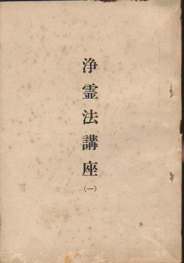
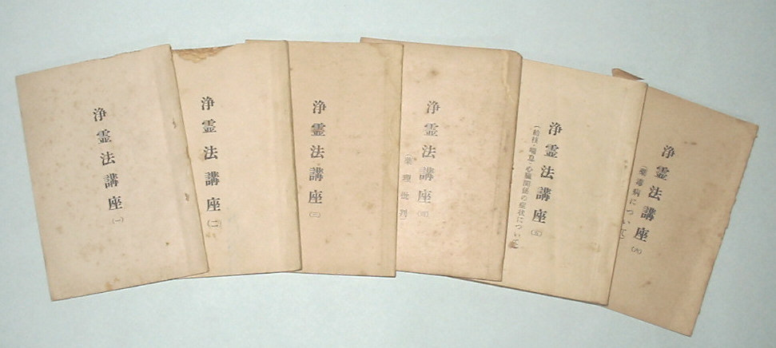

――― 岡
田 自 観 師 の 論 文 集 ――発行誌別
浄霊法講座（一）～（八）
 |
浄霊法講座（一） 昭和28年11月１日 Ａ６版 45P 編集 世界救世教教務部 |
||
|
|||
 |
|||
(一) |
Text | S28.11. 1 |
(二) |
Text | S28.10. 1 |
(三) |
Text | S29.10. 1 |
| (四)薬理批判 | Text | S29.11.20 |
| (五)結核･喘息心臓関係の症状について | Text | S30. 2.10 |
| (六)薬毒病について | Text | S30. 4. 1 |
| (七)婦人病 | Text | S30. 4.25 |
| (八)胃･腸疾患 | Text | S30. 5. 1 |